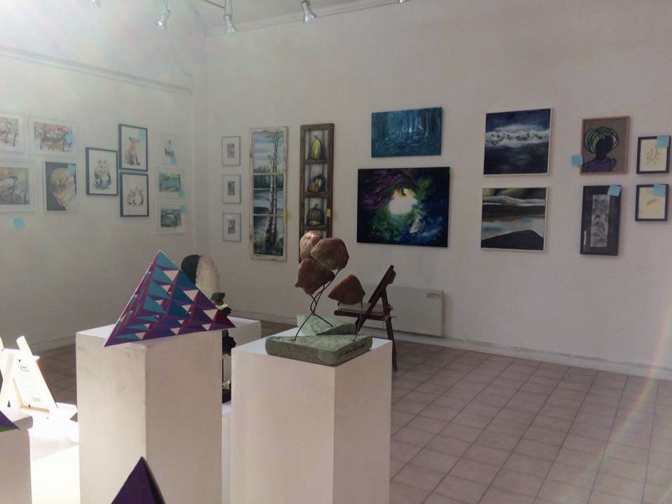

Sidebar[Skip]
Cina Jeppsson
…är bosatt i Haninge. Arbetar med applikationer, olja och akvarell. Är utbildad dekoratör och har även gått olika kurser i målning.
Jag målar även på beställning. Har Du något motiv, som Du skulle vilja ha en tavla av så hör gärna av Dig till mig!

© Cina Jeppsson 2015